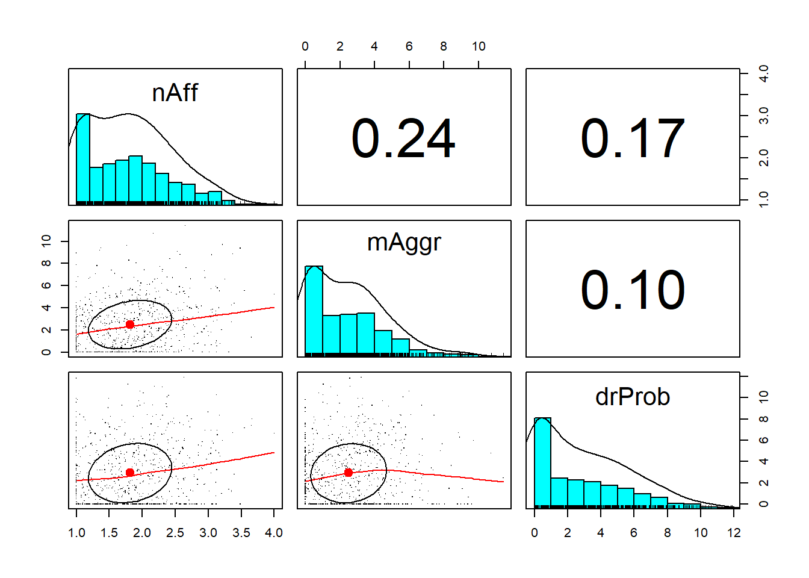

Chapter 3 Preliminary Analyses
The beginning of any data analysis means familiarizing yourself with the data. Among other things, this includes producing and interpreting its distributional characteristics. In this lesson we mix common R operations for formatting, preparing, and analyzing the data with foundational statistical concepts in statistics.
3.2 Research Vignette
We will use data that has been simulated data from Lui (2020) as the research vignette. Controlling for overt discrimination, and neuroticism, Lui examined the degree to which racial microaggressions contributed to negative affect, alcohol consumption, and drinking problems in African American, Asian American, and Latinx American college students (N = 713).
Using the means, standard deviations, correlation matrix, and group sizes (n) I simulated the data. Although I provide some narration of what I did, process of simulation is beyond the learning goals of this lesson, so you are welcome to skip it. Simulating data within each chapter makes the lesson more “portable.”
set.seed(210807) #sets the random seed so that we consistently get the same results
# for practice, you could change (or remove) the random seed and try
# to interpret the results (they should be similar) There are
# probably more efficient ways to simulate data. Given the
# information available in the manuscript, my approach was to first
# create separate datasets for each of the racial ethnic groups and
# then bind them together.
# First, the data for the students who identified as Asian American
Asian_mu <- c(1.52, 1.72, 2.69, 1.71, 2.14, 2.35, 2.42) #creating an object containing the means
Asian_stddev <- c(2.52, 2.04, 0.47, 0.7, 0.8, 2.41, 3.36) # creating an object containing thestandard deviations
Asian_corMat <- matrix(c(1, 0.69, 0.19, 0.28, 0.32, 0.08, 0.23, 0.69, 1,
0.2, 0.29, 0.33, 0.13, 0.25, 0.19, 0.2, 1, 0.5, 0.5, -0.04, 0.09, 0.28,
0.29, 0.5, 1, 0.76, 0.04, 0.18, 0.32, 0.33, 0.5, 0.76, 1, 0.1, 0.21,
0.08, 0.13, -0.04, 0.04, 0.1, 1, 0.42, 0.23, 0.25, 0.09, 0.18, 0.21,
0.42, 1), ncol = 7) # creating an object containing the correlation matrix
Asian_covMat <- Asian_stddev %*% t(Asian_stddev) * Asian_corMat #creating a covariance matrix from the above objects
Asian_dat <- MASS::mvrnorm(n = 398, mu = Asian_mu, Sigma = Asian_covMat,
empirical = TRUE) #creating the dataset
Asian_df <- as.data.frame(Asian_dat) #formatting the dataset as a data frame
library(tidyverse)
# renaming the variables
Asian_df <- rename(Asian_df, OvDisc = V1, mAggr = V2, Neuro = V3, nAff = V4,
psyDist = V5, Alcohol = V6, drProb = V7)
# set upper and lower bound for each variable
Asian_df$OvDisc[Asian_df$OvDisc > 16] <- 16
Asian_df$OvDisc[Asian_df$OvDisc < 0] <- 0
Asian_df$mAggr[Asian_df$mAggr > 16] <- 16
Asian_df$mAggr[Asian_df$mAggr < 0] <- 0
Asian_df$Neuro[Asian_df$Neuro > 5] <- 5
Asian_df$Neuro[Asian_df$Neuro < 1] <- 1
Asian_df$nAff[Asian_df$nAff > 4] <- 4
Asian_df$nAff[Asian_df$nAff < 1] <- 1
Asian_df$psyDist[Asian_df$psyDist > 5] <- 5
Asian_df$psyDist[Asian_df$psyDist < 1] <- 1
Asian_df$Alcohol[Asian_df$Alcohol > 12] <- 12
Asian_df$Alcohol[Asian_df$Alcohol < 0] <- 0
Asian_df$drProb[Asian_df$drProb > 12] <- 12
Asian_df$drProb[Asian_df$drProb < 0] <- 0
Asian_df$RacEth <- "Asian"
# Second, the data for the students who identified as Black/African
# American
Black_mu <- c(4.45, 3.84, 2.6, 1.84, 2.1, 2.81, 2.14)
Black_stddev <- c(4.22, 3.08, 0.89, 0.8, 0.81, 2.49, 3.24)
Black_corMat <- matrix(c(1, 0.81, 0.17, 0.15, 0.09, 0.05, -0.16, 0.81,
1, 0.17, 0.21, 0.11, 0.09, -0.01, 0.17, 0.17, 1, 0.59, 0.54, 0.05,
0.24, 0.15, 0.21, 0.59, 1, 0.72, 0.12, 0.22, 0.09, 0.11, 0.54, 0.72,
1, 0.21, 0.4, 0.05, 0.09, 0.05, 0.12, 0.21, 1, 0.65, -0.16, -0.01,
0.24, 0.22, 0.4, 0.65, 1), ncol = 7)
Black_covMat <- Black_stddev %*% t(Black_stddev) * Black_corMat
Black_dat <- MASS::mvrnorm(n = 133, mu = Black_mu, Sigma = Black_covMat,
empirical = TRUE)
Black_df <- as.data.frame(Black_dat)
Black_df <- rename(Black_df, OvDisc = V1, mAggr = V2, Neuro = V3, nAff = V4,
psyDist = V5, Alcohol = V6, drProb = V7)
# set upper and lower bound for each variable
Black_df$OvDisc[Black_df$OvDisc > 16] <- 16
Black_df$OvDisc[Black_df$OvDisc < 0] <- 0
Black_df$mAggr[Black_df$mAggr > 16] <- 16
Black_df$mAggr[Black_df$mAggr < 0] <- 0
Black_df$Neuro[Black_df$Neuro > 5] <- 5
Black_df$Neuro[Black_df$Neuro < 1] <- 1
Black_df$nAff[Black_df$nAff > 4] <- 4
Black_df$nAff[Black_df$nAff < 1] <- 1
Black_df$psyDist[Black_df$psyDist > 5] <- 5
Black_df$psyDist[Black_df$psyDist < 1] <- 1
Black_df$Alcohol[Black_df$Alcohol > 12] <- 12
Black_df$Alcohol[Black_df$Alcohol < 0] <- 0
Black_df$drProb[Black_df$drProb > 12] <- 12
Black_df$drProb[Black_df$drProb < 0] <- 0
Black_df$RacEth <- "Black"
# Third, the data for the students who identified as Latinx American
Latinx_mu <- c(1.56, 2.34, 2.69, 1.81, 2.17, 3.47, 2.69)
Latinx_stddev <- c(2.46, 2.49, 0.86, 0.71, 0.78, 2.59, 3.76)
Latinx_corMat <- matrix(c(1, 0.78, 0.27, 0.36, 0.42, -0.06, 0.08, 0.78,
1, 0.33, 0.26, 0.35, -0.11, -0.02, 0.27, 0.33, 1, 0.62, 0.64, -0.04,
0.15, 0.36, 0.26, 0.62, 1, 0.81, -0.08, 0.17, 0.42, 0.35, 0.64, 0.81,
1, -0.06, 0.15, -0.06, -0.11, -0.04, -0.08, -0.06, 1, 0.6, 0.08, -0.02,
0.15, 0.17, 0.15, 0.6, 1), ncol = 7)
Latinx_covMat <- Latinx_stddev %*% t(Latinx_stddev) * Latinx_corMat
Latinx_dat <- MASS::mvrnorm(n = 182, mu = Latinx_mu, Sigma = Latinx_covMat,
empirical = TRUE)
Latinx_df <- as.data.frame(Latinx_dat)
Latinx_df <- rename(Latinx_df, OvDisc = V1, mAggr = V2, Neuro = V3, nAff = V4,
psyDist = V5, Alcohol = V6, drProb = V7)
Latinx_df$OvDisc[Latinx_df$OvDisc > 16] <- 16
Latinx_df$OvDisc[Latinx_df$OvDisc < 0] <- 0
Latinx_df$mAggr[Latinx_df$mAggr > 16] <- 16
Latinx_df$mAggr[Latinx_df$mAggr < 0] <- 0
Latinx_df$Neuro[Latinx_df$Neuro > 5] <- 5
Latinx_df$Neuro[Latinx_df$Neuro < 1] <- 1
Latinx_df$nAff[Latinx_df$nAff > 4] <- 4
Latinx_df$nAff[Latinx_df$nAff < 1] <- 1
Latinx_df$psyDist[Latinx_df$psyDist > 5] <- 5
Latinx_df$psyDist[Latinx_df$psyDist < 1] <- 1
Latinx_df$Alcohol[Latinx_df$Alcohol > 12] <- 12
Latinx_df$Alcohol[Latinx_df$Alcohol < 0] <- 0
Latinx_df$drProb[Latinx_df$drProb > 12] <- 12
Latinx_df$drProb[Latinx_df$drProb < 0] <- 0
Latinx_df$RacEth <- "Latinx"
# binding the datasets together
Lui_sim_df <- bind_rows(Asian_df, Black_df, Latinx_df)If you have simulated the data, you can continue using the the “Lui_sim_df” object that we created. In your own research you will likely work with a datafile stored on your computer. Although I will hashtag the code out (making it inoperable until the hashtags are removed), here is script to save the simulated data both .csv (think “Excel lite”) and .rds (it retains all the properties we specified in R) files and then bring/import them back into R. For more complete instructions see the Ready_Set_R lesson.
# write the simulated data as a .csv write.table(Lui_sim_df,
# file='Lui_CSV.csv', sep=',', col.names=TRUE, row.names=FALSE) bring
# back the simulated dat from a .csv file df <- read.csv
# ('Lui_CSV.csv', header = TRUE)# to save the df as an .rds (think 'R object') file on your computer;
# it should save in the same file as the .rmd file you are working
# with saveRDS(Lui_sim_df, 'Lui_RDS.rds') bring back the simulated
# dat from an .rds file df <- readRDS('Lui_RDS.rds')You may have noticed a couple of things in each of these operations
- First, I named the data object to include a “df” (i.e., dataframe).
- It is a common (but not required) practice for researchers to simply use “df” or “dat” as the name of the object that holds their data. This practice has advantages (e.g., as making the re-use of code quite easy across datasets) and disadvantages (e.g., it is easy to get confused about what data is being used).
- Second, when you run the code, any updating replaces the prior object.
- While this is irrelevant today (we are saving the same data with different names), it points out the importance of creating a sensible and systematic order of operations in your .rmd files and then knowing where you are in the process.
Because the data is simulated, I can simply use the data I created in the simulation, however, I will go ahead and use the convention of renaming it, “df”, which (in this case) stands for dataframe and is the common term for a dataset for users of R. A quick note: in statistics “df” is also an abbreviation for “degrees of freedom.”
3.3 Variable Types (Scale of Measurement)
When working with raw data, we begin by inspecting and preparing it for the planned analyses. The type of variables we have influences what statistics we will utilize. Further, the data must be formatted as that type in order for the statistic to properly execute. Variable types (or formats) are directly connected to the statistical concept of measurement scale (or scale of measurement). Researchers often think of the categorical versus continuous distinction, but it’s even more nuanced than that.
3.3.1 Measurement Scale
Categorical variables name discrete or distinct entities where the categorization has no inherent value or order. When there are two categories, the variable type is binary (e.g., pregnant or not, treatment and control conditions). When there are more than two categories, the variable type is nominal (e.g., teacher, student, or parent; Republican, Democrat, or Independent).
Ordinal variables are also categorical variables where the score reflects a logical order or relative rank (e.g., the order of finishing in a race). A challenge with the ordinal scale is the inability to determine the distance between rankings. The percentile rank is a (sometimes surprising) example of the ordinal scale. Technically, Likert type scaling (e.g., providing ratings on a 1-to-5 scale) is ordinal because it is uncertain that the distance between each of the anchors is equal. Practically, though, most researchers treat the Likert type scale as interval. This is facilitated, in part, because most Likert-type scales have multiple items which are averaged into a single score. Navarro(2020a) uses the term, quasi-interval to describe Likert-type scaling.
Continuous variables can take on any value in the measurement scale that is being used. Interval level data has equal distances between each unit on the scale. Two classic examples of interval level data are temperature and year. Whether using Fahrenheit or Celsius, the rating of 0 does not mean there is an absence of temperature, rather, it is simply a number along a continuum of temperature. Another interval example is calendrical time. In longitudinal research, we frequently note the date or year (e.g., 2019) of an event. It is highly unlikely that the value zero will appear in our research and if it did, it would not represent the absence of time. A researcher can feel confident that a variable is on the interval scale if the values can be meaningfully added and subtracted.
Ratio level data also has equal distances between each unit on the scale, plus it has a true zero point where the zero indicates absence. Examples are behavioral counts (e.g., cigarettes smoked) and time-on-task (e.g., 90 seconds). Ratio data offers more manipulative power because researchers can add, subtract, multiply, and divide ratio level data.
3.3.2 Corresponding Variable Structure in R
With these definitions in mind, we will see if R is reading our variables correctly. R will provide the following designations of variables:
| Abbreviation | Unabbreviated | Used for | Scale of Measurement |
|---|---|---|---|
| num | numerical | numbers that allow decimals or fractional values | quasi-interval, interval, or ratio |
| int | integer | whole numbers (no decimals) | quasi-interval, interval, or ratio |
| chr | character | sometimes termed “string” variables, these are interpreted as words | NA |
| Factor | factor | two or more categories; R imposes an alphabetical order; the user can re-specify the order based on the logic of the design | nominal |
Looking back at the Lui (2020) article we can determine what the scale of measurement is for each variable and what the corresponding R format for that variable should be:
| Name | Variable | How assessed | Scale of measurement | R format |
|---|---|---|---|---|
| OvDis | Overt racial discrimination | 9 items, 1-to-4 Likert scaling for frequency and stressfulness assessed separately, then multiplied | quasi-interval | numerical |
| mAggr | Racial and ethnic microaggressions | 28 items, 1-to-4 Likert scaling for frequency and stressfulness assessed separately, then multiplied | quasi-interval | numerical |
| Neuro | Neuroticism | 4 items, 1-to-5 Likert scaling | quasi-interval | numerical |
| nAff | Negative affect | 6 items, 1-to-4 Likert scaling | quasi-interval | numerical |
| psyDist | Psychological distress | 6 items, 1-to-5 Likert scaling | quasi-interval | numerical |
| Alcohol | Hazardous alcohol use | 10 items, 0-to-4 Likert scaling | quasi-interval | numerical |
| drProb | Drinking problems | 10 items, 0-to-4 Likert scaling | quasi-interval | numerical |
| RacEth | Race Ethnicity | 3 categories | nominal | factor |
We can examine the accuracy with which R interpreted the type of data with the structure() command.
'data.frame': 713 obs. of 8 variables:
$ OvDisc : num 1.62 0 2.08 0 0 ...
$ mAggr : num 2.78 0 2.8 0 0 ...
$ Neuro : num 3.24 2.59 2.79 2.53 1.34 ...
$ nAff : num 1.11 1 1.08 1 1.03 ...
$ psyDist: num 2.07 1 1.06 1.82 1.36 ...
$ Alcohol: num 1.63 0 3.2 2.52 2.43 ...
$ drProb : num 2.4073 5.3177 0.6424 1.1671 0.0774 ...
$ RacEth : chr "Asian" "Asian" "Asian" "Asian" ...Only Race/Ethnicity needs to be transformed from a character (“chr) variable to a factor. I will use the mutate() function in the dplyr package to convert the RacEth variable to be a factor with three levels.
Let’s check the structure again. Below we see that the RacEth variable is now a factor. R has imposed an alphabetical order: Asian, Black, Latinx.
'data.frame': 713 obs. of 8 variables:
$ OvDisc : num 1.62 0 2.08 0 0 ...
$ mAggr : num 2.78 0 2.8 0 0 ...
$ Neuro : num 3.24 2.59 2.79 2.53 1.34 ...
$ nAff : num 1.11 1 1.08 1 1.03 ...
$ psyDist: num 2.07 1 1.06 1.82 1.36 ...
$ Alcohol: num 1.63 0 3.2 2.52 2.43 ...
$ drProb : num 2.4073 5.3177 0.6424 1.1671 0.0774 ...
$ RacEth : Factor w/ 3 levels "Asian","Black",..: 1 1 1 1 1 1 1 1 1 1 ...3.4 Descriptive Statistics
While the majority of this OER (and statistics training in general) concerns the ability to make predictions or inferences (hence inferential statistics) from data, we almost always begin data analysis by describing it (hence, descriptive statistics).
Our research vignette contains a number of variables. Lui (2020) was interested in predicting negative affect, alcohol consumption, and drinking problems from overt discrimination, microaggressions, neuroticism, through psychological distress. This research model is a mediation model (or model of indirect effects) and is beyond the learning objectives of today’s instruction. In demonstrating descriptive statistics, we will focus on one of the dependent variables: negative affect.
As we begin to explore the descriptive and distributional characteristics of this variable, it may be helpful to visualize it through a histogram.
ggpubr::gghistogram(df$nAff, xlab = "Negative Affect", ylab = "Frequency",
add = "mean", rug = TRUE, color = "#00AFBB", title = "Frequencies of Negative Affect")
3.4.1 Measures of Central Tendency
Describing data almost always begins with measures of central tendency: the mean, median, and mode.
3.4.1.1 Mean
The mean is simply a mathematical average of the non-missing data. The mathematical formula is frequently expressed this way:
\[\bar{X} = \frac{X_{1} + X_{2} + X_{3}...+ X_{N}}{N}\] Because this formula is clumsy to write, there is statistical shorthand to help us convey it more efficiently (not necessarily, more easily).
Placing information below (where to start), above (where to stop), and to the right (what data to use) of the summation operator (\(\sum\)), provides information about the nature of the data. In the formula below, we learn from the notation to the right that we use the individual data in the vector X. We start with the first piece of data (i = 1) and stop with the Nth (or last) case.
\[\sum_{i=1}^{N}X_{i}\] The \(\frac{1}{N}\) notation to the left tells us that we are calculating the mean.
\[\bar{X}=\frac{1}{N}\sum_{i=1}^{N}X_{i}\] R is an incredible tool in that we can type out mathematical operations, use functions from base R, and use packages to do the work for us. If we had the following toy dataset (2, 3, 2, 1, 5, NA) we could calculate the mean by typing it out:
[1] 2.6Alternatively we could use the built-in functions in base R to do the work for us. Let me add a little complexity by creating a single variable (a vector of data) and introducing a little missingness (i.e., the “NA”).
I can use the base R function mean(). Inside the parentheses I point to the data. The function automatically sums the values. When there is missingness, adding na.rm=TRUE tells the function to exclude the missing variables from the count (i.e., the denominator would still be 5).
[1] 2.6In my simulation of the research vignette, we have no missing values, none-the-less, it is, perhaps a good habit to include the na.rm=TRUE specification in our code. Because we have an entire dataframe, we just point to the dataframe and the specific variable (i.e., negative affect).
[1] 1.8137483.4.1.2 Median
The middle value in a set of values is the median. The easiest way to calculate the median is to sort the numbers:
| Unsorted | Sorted |
|---|---|
| 2, 3, 2, 1, 5, | 1, 2, 2, 3, 5 |
And select the middle value. Because we have an odd number of values (N = 5), our median is 2. If we had an even number of values, we would take the average of the middle two numbers.
We can use a base R function to calculate the median for us. Let’s do it first with the toy data:
[1] 2Let’s also calculate it for the negative affect variable from the research vignette.
[1] 1.7653673.4.1.3 Mode
The mode is the score that occurs most frequently. When a histogram is available, spotting the mode is easy because it will have the tallest bar. Determining the mode can be made complicated if there are ties for high frequencies of values. A common occurrence of this happens in the bimodal distribution.
Unfortunately, there is no base R function that will call a mode. In response, Navarro developed and included a function in the lsr package that accompanies her (2020a) textbook. Once the package is installed, you can include two colons, the function name, and then the dataset to retrieve the mode.
[1] 2From our toy data, we the modeOf() function returns a 2.
Let’s retrieve the mode from the negative affect variable in our research vignette.
[1] 1The value is a 1.0 and is likely an artifact of how I simulated the data. Specifically, to ensure that the values fell within the 1-to-4 range, I rounded up to 1.0 any negative values and rounded down to 4.0 any values that were higher than 4.0.
3.4.1.4 Relationship between mean, median, and mode
Many inferential statistics rely on manipulations of the mean. The mean, though, can be misleading when it is influenced by outliers. Therefore, as we engage in preliminary exploration, it can be quite useful to calculate all three measures of central tendency, as well as exploring other distributional characteristics.
As a bit of an advanced cognitive organizer, it may be helpful to know that in a normal distribution, the mean, median, and mode are the same number (or quite close). In a positively skewed distribution, the mean is higher than the median which is higher than the mode. In a negatively skewed distribution, the mean is lower than the median, which is lower than the mode.
[1] 1.813748[1] 1.765367[1] 1In our research vignette, the mean (1.81) is higher than the median (1.75) is higher than the mode (1.0). This would suggest a positive skew. Here is a reminder of our histogram:
ggpubr::gghistogram(df$nAff, xlab = "Negative Affect", ylab = "Frequency",
add = "mean", rug = TRUE, color = "#00AFBB", title = "Frequencies of Negative Affect")
3.5 Variability
Researchers are critically interested in the spread or dispersion of the scores.
3.5.1 Range
The range is the simplest assessment of variability and is calculated by identifying the highest and lowest scores and subtracting the lowest from the highest. In our toy dataset, arranged from low-to-high (1, 2, 2, 3, 5 ) we see that the low is 1 and high is 5; 4 is the range. We can retrieve this data with three base R functions that ask for the minimum score, the maximum score, or both together – the range:
[1] 1[1] 5[1] 1 5The negative affect variable from our research vignette has the following range:
[1] 1[1] 4[1] 1 4With a low of 1 and high of 4, the range of negative affect is 3. This is consistent with the description of the negative affect measure.
One limitation of the range is that it is easily influenced by extreme scores.
3.5.2 Percentiles, Quantiles, Interquartile Range
The interquartile range is middle 50% of data, or the scores that fall between 25th and 75th percentiles. Before calculating that, let’s first define quantiles and percentiles. Quantiles are values that split a data into equal portions. Percentiles divide the data into 100 equal parts. Percentiles are commonly used in testing and assessment. You may have encountered them in standardized tests such as the SAT and GRE where both the score obtained and its associated percentile are reported. When graduate programs evaluate GRE scores, depending on their criteria and degree of competitiveness they may set a threshold based on percentiles (e.g., using a cut of of the 50th, 75th, or higher percentile for the verbal or quantitative GRE scores).
We have already learned the value of the median. The median is also the 50th percentile. We can now use the quantile() function and indicate we want the value at the 50% percentile.
Let’s first examine the toy dataset:
[1] 250%
2 As shown by our calculation, the value at the median and the 50th percentile is 2.0. Let’s look at those values for the research vignette:
[1] 1.765367 50%
1.765367 Again, we see the same result. Half of the values for negative affect are below 1.76; half are above.
The quantile() function is extremely useful. We can retrieve the raw score at any percentile, and we could ask for as many as we desired. Here’s an example.
10% 20% 30% 40% 50% 60% 70% 80%
1.000000 1.142097 1.376633 1.582701 1.765367 1.943260 2.143177 2.360980
90%
2.682303 Quartiles divide the data into four equal parts. The interquartile range is the spread of data between the 25th and 75th percentiles (or quartiles). We calculate the interquartile range by first obtaining those values, and then subtracting the lower from the higher.
25% 75%
1.271045 2.240372 We see that a score of 1.29 is at the 25th percentile and a score of 2.24 is at the 75th percentile. If we subtract 1.29 from 2.24…
[1] 0.95…we learn that the interquartile range is 0.95. We could also obtain this value by using the IQR() function in base R.
[1] 0.9693262You may be asking, “When would we use the interquartile range?” When data are influenced by outliers (i.e., extreme scores), using a more truncated range (the middle 50%, 75%, 90%) may be an option (if the dataset it large enough). At this point, though, the goal of this lesson is simply to introduce different ways of examining the variability in a dataset. Ultimately, we are working our way to the standard deviation. The next logical step is the mean deviation.
3.5.3 Deviations around the Mean
Nearly all statistics include assessments of variability in their calculation and most are based on deviations around the mean. In fact it might be good to pause for a moment and consider as the lessons in this OER (and those that follow) continue, we will be engaged in mathematical and statistical modeling. In a featured article in the American Psychologist, Rodgers (2010) described models as a representation of reality that has two features:
- the model describes reality in some important ways, and
- the model is simpler than reality.
Albeit one of the simplest, the mean is a statistical model. Rodgers noted this when he wrote, “The mean and variance have done yeoman service to psychology and other behavioral sciences,” (2010, p. 4). These next statistical operations will walk through the use of the mean, particularly in its role in understanding variance. In later lessons, means and variances are used in understanding relations and differences.
A first step in understanding mean deviation is to ask, “How far does each individual score deviates from the mean of scores?” We can demonstrate this with our toy dataset. I am taking more steps than necessary to (a) make clear how the mean deviation (abbreviated, mdev) is calculated and (b) practice using R.
First, I will create a variable representing the mean:
# Dissecting the script, each variable is referenced by
# df_nameDOLLARSIGNvariable_name
toy$mean <- mean(toy$toy, na.rm = TRUE)
head(toy) #displays the first 6 rows of the data toy mean
1 2 2.6
2 3 2.6
3 2 2.6
4 1 2.6
5 5 2.6
6 NA 2.6Next, I will subtract the mean from each individual score. The result
toy mean mdev
1 2 2.6 -0.6
2 3 2.6 0.4
3 2 2.6 -0.6
4 1 2.6 -1.6
5 5 2.6 2.4
6 NA 2.6 NAThe variable, mdev (short for “mean deviation”) lets us know how far the individual score is from the mean. Unfortunately, it does not provide an overall estimate of variation. Further, summing and averaging these values all result in zero. Take a look:
# Dissecting the script, Wrapping the sum and mean script in 'round'
# and following with the desired decimal places, provides a rounde
# result.
round(sum(toy$mdev, na.rm = TRUE), 3)[1] 0[1] 0One solution is to create the mean absolute deviation. We first transform the mean deviation score to their absolute values, and then sum them.
toy mean mdev abslt_m
1 2 2.6 -0.6 0.6
2 3 2.6 0.4 0.4
3 2 2.6 -0.6 0.6
4 1 2.6 -1.6 1.6
5 5 2.6 2.4 2.4
6 NA 2.6 NA NAAnd now to average them:
[1] 1.12This value tells how far individual observations are from the mean, “on average.” In our toy dataset, the average distance from the mean is 1.12.
So that we can keep statistical notation in our mind, this is the formula calculating the absolute mean deviation:
\[\sum_{i=1}^{n}|X_{i} - \bar{X}|\] Let’s quickly repeat the process with the negative affect variable in our research vignette. So that we can more clearly see the relationship of the new variables to negative affect, let me create a df containing only nAff:
df_nAff$mdevNA <- df_nAff$nAff - mean(df_nAff$nAff, na.rm = TRUE)
df_nAff$abNAmdev <- abs(df_nAff$mdevNA)
head(df_nAff) nAff mdevNA abNAmdev
1 1.109882 -0.7038658 0.7038658
2 1.000000 -0.8137481 0.8137481
3 1.075573 -0.7381750 0.7381750
4 1.000000 -0.8137481 0.8137481
5 1.025246 -0.7885020 0.7885020
6 1.920559 0.1068111 0.1068111[1] 0.523Thus, the absolute mean deviation for the negative affect variable in our research vignette is 0.521.
Although relatively intuitive, the absolute mean deviation is not all that useful. Most statistics texts include it because it is one of the steps toward variance, and ultimately, the standard deviation.
3.5.4 Variance
Variance is considered to be an average dispersion calculated by summing the squared deviations and dividing by the number of observations (minus 1; more on that in later lessons).
Our next step is to square the mean deviations. This value is also called the sum of squared errors, sum of squared deviations around the mean, or sums of squares and is abbreviated as SS. Below are common statistical representations:
\[SS = \sum_{i=1}^{n}(X_{i} - \bar{X})^{^{2}}\] Let’s do it with our toy data.
[1] 9.2 toy mean mdev abslt_m mdev2
1 2 2.6 -0.6 0.6 0.36
2 3 2.6 0.4 0.4 0.16
3 2 2.6 -0.6 0.6 0.36
4 1 2.6 -1.6 1.6 2.56
5 5 2.6 2.4 2.4 5.76
6 NA 2.6 NA NA NAThus, our SS (sums of squares or sums of squared errors) is 9.2.
To obtain the variance we divide by N (or N - 1; described in later lessons). Here are the updated formulas:
\[s^{2}=\frac{SS}{N-1}=\frac{\sum_{i=1}^{n}(X_{i} - \bar{X})^{^{2}}}{N-1}\] Let’s do this with the toy data:
[1] 2.3# to obtain the 'correct' calculation by using each of these
# individual R commands, we need to have non-missing data
toy <- na.omit(toy)
sum(toy$mdev2, na.rm = TRUE)/((nrow(toy) - 1)) #variance[1] 2.3Of course R also has a function that will do all the steps for us:
[1] 2.6[1] 2.3The variance around the mean (2.6) of our toy data is 2.3.
Let’s quickly repeat this process with the negative affect variable from the research vignette. In prior steps we had calculated the mean deviations by subtracting the mean from each individual score. Next we square the mean deviations….
nAff mdevNA abNAmdev NAmd2
1 1.109882 -0.7038658 0.7038658 0.49542700
2 1.000000 -0.8137481 0.8137481 0.66218597
3 1.075573 -0.7381750 0.7381750 0.54490233
4 1.000000 -0.8137481 0.8137481 0.66218597
5 1.025246 -0.7885020 0.7885020 0.62173547
6 1.920559 0.1068111 0.1068111 0.01140861… and sum them.
[1] 283.8923Our sums of squared deviations around the mean is 283.44. When we divide it by N - 1, we obtain the variance. We can check our work with (a) the values we calculated at each step, (b) the steps written in separate R code, and (c) the var() function.
[1] 0.3980899[1] 0.3987252[1] 0.3987252Unfortunately, because the mean deviations were squared, this doesn’t interpret well. Hence, we move to the standard deviation.
3.5.5 Standard Deviation
The standard deviation is simply the square root of the variance. Stated another way, it is an estimate of the average spread of data, presented in the same metric as the data.
Calculating the standard deviation requires earlier steps:
- Calculating the mean.
- Calculating mean deviations by subtracting the mean from each individual score.
- Squaring the mean deviations.
- Summing the mean deviations to create the SS, or sums of squares.
- Dividing the SS by N - 1; this results in the variance around the mean.
The 6th step is to take the square root of variance. It is represented in the formula, below:
\[s=\sqrt{\frac{SS}{N-1}}=\sqrt{\frac{\sum_{i=1}^{n}(X_{i} - \bar{X})^{^{2}}}{N-1}}\] Repeated below are each of the six steps for the toy data:
# six steps wrapped into 1
toy$mdev <- toy$toy - mean(toy$toy, na.rm = TRUE)
toy$mdev2 <- (toy$mdev) * (toy$mdev)
# I can save the variance calculation as an object for later use
toy_var <- sum(toy$mdev2)/(nrow(toy) - 1)
# checking work with the variance function
var(toy$toy)[1] 2.3The seventh step is to take the square root of variance.
[1] 2.6[1] 1.516575[1] 1.516575It is common to report means and standard deviations for continuous variables in our datasets. For the toy data our mean is 2.6 with a standard deviation of 1.52.
Let’s repeat the process for the negative affect variable in the research vignette. First the six steps to calculate variance.
# six steps wrapped into 1
df_nAff$mdevNA <- df_nAff$nAff - mean(df_nAff$nAff, na.rm = TRUE)
df_nAff$NAmd2 <- (df_nAff$mdevNA) * (df_nAff$mdevNA)
# I can save the variance calculation as an object for later use
nAff_var <- sum(df_nAff$NAmd2)/(nrow(df) - 1)
# checking work with the variance function
var(df_nAff$nAff)[1] 0.3987252The seventh step is to take the square root of variance.
[1] 1.813748[1] 0.6314469[1] 0.6314469In APA Style we use M and SD as abbreviations for mean and standard deviation, respectively. In APA Style, non-Greek statistical symbols such as these are italicized. Thus we would write M = 1.81(SD = 0.63) in a statistical string of results.
We can examine the standard deviation in relation to its mean to understand how narrowly or broadly the data is distributed. Relative to a same-sized mean, a small standard deviation means that the mean represents the data well. A larger standard deviation, conveys that there is greater variability and the mean, alone, is a less valid representation of the score.
In later lessons we will explore the standard deviation in more detail – learning how we can use it in the determination of the significance and magnitude of relations and differences.
3.6 Are the Variables Normally Distributed?
Statistics that we use are accompanied by assumptions about the nature of variables in the dataset. A common assumption is that the data are normally distributed. That is, the data presumes a standard normal curve.
For a streamlined presentation, let me create a df with three, continuously scaled, variables of interest.
# I have opened the tidyverse library so that I can use the pipe
library(tidyverse)
df_3vars <- df %>%
dplyr::select(nAff, mAggr, drProb)3.6.1 Skew and Kurtosis
Skew and kurtosis are indicators of non-normality. Skew refers to the degree to which the data is symmetrical. In the figure below, the symmetrical distribution in the center (the black line) has no apparent evidence of skew. In contrast, the red figure whose curve (representing a majority of observations) in the left-most part of the graph (with the tail pulling to the right) is positively skewed; the blue figure whose curve (representing a majority of cases) is in the right-most part of the graph (with the tail pulling to the left) is negatively skewed.
 Kurtosis refers to the degree to which the distribution of data is flat or peaked. Mesokurtic distributions are considered to be closest to normal. Leptokurtic distributions are peaked and platykurtic distributions are flat. As we will learn as we progress, visual observation of data is a legitimate component in evaluating skew and kurtosis.
Kurtosis refers to the degree to which the distribution of data is flat or peaked. Mesokurtic distributions are considered to be closest to normal. Leptokurtic distributions are peaked and platykurtic distributions are flat. As we will learn as we progress, visual observation of data is a legitimate component in evaluating skew and kurtosis.
 There have been numerous approaches to calculating and interpreting skew and kurtosis. Consequently, different statistics packages calculate skew and kurtosis differently. The psych package (a go-to-for a variety of tasks) offers three different options for calculating skew and kurtosis. These are specified in the script as “type=#” (i.e., 1, 2, or 3 [the default]). Revelle (2021) refers readers to Joanes and Gill’s (1998) article for detailed information about each. A very helpful resource to understand skew, kurtosis, and its interpretation is found in chapter four (Data Preparation and Psychometrics Review) of Kline’s (2016a) SEM text is helpful in the interpretation of skew and kurtosis. Summarizing by simulation studies for structural equation modeling (i.e., multivariate statistics that are generally characterized as large sample studies using maximum likelihood estimation), Kline suggested that type=1 skew values greater than the absolute value of 3.0 are “severely” skewed. Regarding type=1 kurtosis, Kline noted the literature has suggested that values from 8.0 to 20.0 have been described as severely kurtotic. As an interpretive framework, Kline suggested that absolute values greater than 10.0 are problematic and values greater than 20 are serious. He added that this rule-of-thumb errs on the conservative side.
There have been numerous approaches to calculating and interpreting skew and kurtosis. Consequently, different statistics packages calculate skew and kurtosis differently. The psych package (a go-to-for a variety of tasks) offers three different options for calculating skew and kurtosis. These are specified in the script as “type=#” (i.e., 1, 2, or 3 [the default]). Revelle (2021) refers readers to Joanes and Gill’s (1998) article for detailed information about each. A very helpful resource to understand skew, kurtosis, and its interpretation is found in chapter four (Data Preparation and Psychometrics Review) of Kline’s (2016a) SEM text is helpful in the interpretation of skew and kurtosis. Summarizing by simulation studies for structural equation modeling (i.e., multivariate statistics that are generally characterized as large sample studies using maximum likelihood estimation), Kline suggested that type=1 skew values greater than the absolute value of 3.0 are “severely” skewed. Regarding type=1 kurtosis, Kline noted the literature has suggested that values from 8.0 to 20.0 have been described as severely kurtotic. As an interpretive framework, Kline suggested that absolute values greater than 10.0 are problematic and values greater than 20 are serious. He added that this rule-of-thumb errs on the conservative side.
The psych::describe specification of “type=1” results in the skew index and kurtosis index. For simplicity sake, I will refer to this specific variation of skew and kutosis as “type=1.” This is a very quick way to obtain initial values.
vars n mean sd median trimmed mad min max range skew kurtosis
nAff 1 713 1.81 0.63 1.77 1.76 0.72 1 4.00 3.00 0.51 -0.42
mAggr 2 713 2.49 2.19 2.17 2.24 2.43 0 11.42 11.42 0.91 0.65
drProb 3 713 2.92 2.78 2.33 2.58 3.45 0 11.90 11.90 0.78 -0.21
se
nAff 0.02
mAggr 0.08
drProb 0.10Using Kline’s (2016a) guidelines for evaluation, a quick review of the type=1 output indicates that no skew value exceeded the absolute value of 3.0. That is, across the nAff, mAggr, and drProb variables the highest type=1 skew value was 0.93 Regarding kurtosis, no value had a greater magnitude then .59 and all fell below the absolute value of 10. A limitation of the type=1 output and Kline’s interpretative guidelines is that the simulation studies that led to the interpretive guidelines were based on structural equation modeling. These statistics are multivariate in nature, they typically use maximum likelihood estimators, and are based on large samples.
An alternative tool for identifying distributions that are severely skewed or kurtotic is the “skew.2SE” and “kurt.2SE” output from pastecs::stat.desc.
These values represent the type=1 skew (or kurtosis) value divided by two-times its respective standard error (i.e., the standard error of the skew or kurtosis distribution, not the se value associated with the variable). The result is a standardized value that, on its own, indicates statistical significance. In the case of skew.2SE and kurt2SE, values of 1 (p < .05), 1.29 (p < .01), and 1.65 (p < .001) represent statistically significant departures from symmetry (skew) and normal peakedness (kurtosis). Unfortunately, this tool is not without criticism.
\(skew.2SE = \frac{S-0}{2*SE_{skewness}}\) and \(kurt.2SE = \frac{S-0}{2*SE_{kurtosis}}\)
The skew.2SE and kurt.2SE values can be obtained with pastecs::stat.desc by adding the “norm = TRUE” statement.
nAff mAggr
nbr.val 713.000000000000000000000 713.0000000000000000000000000
nbr.null 0.000000000000000000000 119.0000000000000000000000000
nbr.na 0.000000000000000000000 0.0000000000000000000000000
min 1.000000000000000000000 0.0000000000000000000000000
max 4.000000000000000000000 11.4193472349555946721011424
range 3.000000000000000000000 11.4193472349555946721011424
sum 1293.202396986186386129702 1772.9047547268992275348864496
median 1.765366956719584212721 2.1702325413588932079278493
mean 1.813748102364917569318 2.4865424329970533534606147
SE.mean 0.023647871456839660714 0.0821091579065054283370628
CI.mean.0.95 0.046427899159900143378 0.1612050247458937379807509
var 0.398725160825158186917 4.8069845480383115443601127
std.dev 0.631446878862472638083 2.1924836482943974580450686
coef.var 0.348144749559841870656 0.8817398887706798804586583
skewness 0.509847355388718947999 0.9072670817943200294308781
skew.2SE 2.784775604496556589140 4.9554738480840363479273947
kurtosis -0.431370013354644310510 0.6446009591154999718298768
kurt.2SE -1.179701916057711574837 1.7628415583352385898052717
normtest.W 0.947747894960071946002 0.9160358300310357249074400
normtest.p 0.000000000000003548014 0.0000000000000000001931087
drProb
nbr.val 713.000000000000000000000000000
nbr.null 176.000000000000000000000000000
nbr.na 0.000000000000000000000000000
min 0.000000000000000000000000000
max 11.897269669625760712960982346
range 11.897269669625760712960982346
sum 2080.674335793011778150685131550
median 2.327140791884834580827146056
mean 2.918196824394125865609339598
SE.mean 0.104209937080375208973137546
CI.mean.0.95 0.204595515459292442983496585
var 7.742973933228878280488061137
std.dev 2.782619976430284580715124321
coef.var 0.953540882907379039323814141
skewness 0.777725776691186476696771024
skew.2SE 4.247921945709623336995264253
kurtosis -0.215619970410508177138808605
kurt.2SE -0.589673098172587506482500430
normtest.W 0.898257151085984140159723665
normtest.p 0.000000000000000000002486005Statisticians have noted that these standardized values are quite sensitive to sample size (Field, 2012; Kline, 2016a). In large samples even minor deviations from normality may appear as statistically significant. In contrast, small samples with lower power may be severely non-normal, but skew and kurtosis could go undetected. When sample sizes are smaller, using the 1.96 (or “2”) criteria is acceptable in determining a significant skew or kurtosis, however, as the sample size increases, the probability of rejecting the hypothesis that skew (or kurtosis) also zero increases. Field (2012) noted that in such cases it is appropriate to relax the standard and evaluate skew or kurtosis against the 1.29 (p < .01) criteria. Further, when samples are larger than 200, it may be more appropriate to abandon the interpretation of the z-values and, instead, examine the shape of the distribution rather than to interpret these standardized values.
Comparing the skewness and kurtosis type=1 values to the skew.2SE and kurt.2SE values, we can see the interpretive challenges.
| Variable | skewness | skew.2SE | kurtosis | kurt.2SE |
|---|---|---|---|---|
| nAff | 0.575 | 3.141*** | -0.176 | -0.481 |
| mAggr | 0.926 | 5.059*** | 0.575 | 1.572** |
| drProb | 0.783 | 4.278*** | -0.168 | -0.460 |
Values in the “skewness” column are concerning when they are exceed the absolute value of 3.0; none are. Values in the “skew.2SE” column are statistically significant at \(p < .001\) when they exceed 1.65. Here, the two approaches to interpreting skew both suggest positive skew (i.e., heavy distribution in the left with a long tail to the right), but only the “skew.2SE” results suggest that the degree of skewness is significant/concerning.
Regarding kurtosis, values in the “kurtosis” column become concerning when they exceed the absolute value of 10; none are. Values in the “kurt.2SE” become statistically significant when they exceed 1.0. The mAggr variable’s value of 1.572 is statistically significant at \(p < .01\).
So how do we think about skewness and kurtosis in our data? First, I simulated a dataset with more than 700 cases. This far exceeds the “large” sample size of 200. Therefore, interpreting the type 1 skewness and kurtosis values according to Kline’s (2016a) criteria of less than the absolute values of 3 and 10, respectively, is probably most appropriate. Further, skewness and kurtosis are only two dimensions of assessing whether or not a distribution is normally distributed. Thus, I will keep these results in mind as I examine additional metrics (especially when we look at histograms with superimposed curve).
In this OER, I will predominantly use the type=1 output from the psych::describe package and use Kline’s (2016a) interpretive criteria. I do think the “skew.2SE” and “kurt.2SE” metrics can be useful when sample sizes are smaller (perhaps \(N = 100\) or less) and ordinary least squares (such as used in ANOVA and regression models) statistics will be utilized. In any case, if I have significant concerns about normality, I always return to more extensive and authoritative sources to make my decisions about preparing my data for analysis.
3.6.2 Shapiro-Wilk Test of Normality
In addition to skew and kurtosis, there are formal statistical tests that evaluate whether or not our data is statistically significantly different than a normal distribution. One of those is the Shapiro-Wilk test of normality. The output we obtained from pastecs::stat.desc included the Shapiro-Wilk test value and the associated p value. When \(p < .05\), our data is statistically significantly different from a normal distribution.
In our simulated data, all variables were statistically significantly different than a normal distribution (\(nAff: W = 0.948, p < .001; mAggr: W = 0.913, p < .001; drProb: W = 0.900, p < .001\)).
Just because data is skewed, kurtotic, or non-normally distributed does not (necessarily) mean that we cannot use it. As we move through the lessons in this OER we will evaluate the quality of the data according to the statistical assumptions associated with the statistic we are using. Often there are tools that we can use (e.g., variations of the statistic that are robust to violations of assumptions, deleting univariate or multivariate outliers) in spite of our data characteristics.
3.7 Relations between Variables
Preliminary investigation of data almost always includes a report of their bivariate relations. Correlation coefficients express the magnitude of relationships on a scale ranging from -1 to +1. A correlation coefficient of
- -1.0 implies a 1:1 inverse relationship, such that for every unit of increase in variable A, there is a similar decrease in variable B,
- 0.0 implies no correspondence between two variables,
- 1.0 implies that as A increases by one unit, so does B.
Correlation coefficients are commonly represented in two formulas. In a manner that echoes the calculation of variance, the first part of the calculation estimates the covariation (i.e., covariance) of the two variables of interest.
\[ \mbox{Cov}(X,Y) = \frac{1}{N-1} \sum_{i=1}^N \left( X_i - \bar{X} \right) \left( Y_i - \bar{Y} \right) \]
The problem is that the result is unstandardized and difficult to interpret. Therefore, the second part of the calculation of the correlation coefficient results in the standardization of the metric in the -1 to +1 scale. \[ r_{XY} = \frac{\mbox{Cov}(X,Y)}{ \hat{\sigma}_X \ \hat{\sigma}_Y} \] Covariation and correlation matrices are central to many of our statistics therefore, those of who teach statistics believe that it is important to take a look “under the hood.” From our research vignette, let’s calculate the relationship between negative affect and psychological distress.
Examining the first formula, some parts should look familiar:
- \((X_i - \bar{X})\): We can see that we need to subtract the mean from the first(X) variable in involved in the correlation; we saw this when we calculated mean deviations.
- \((Y_i - \bar{Y})\): We repeat the mean deviation process for the second (Y) variable.
Let’s work step-by-step through the calculation of a correlation coefficient. So that we can more easily see what we are doing with the variables, I will create a super tiny dataframe with the two variables of interest (negative affect and microaggressions):
# just in case it turned off, I'm reopening tidyverse so that I can
# use the pipe
library(tidyverse)
# using the dplyr package to select the two variables in this tiny df
df4corr <- df %>%
dplyr::select(nAff, mAggr)
# displaying the first 6 rows of df4corr ('dataframe for
# correlations' -- I made this up)
head(df4corr) nAff mAggr
1 1.109882 2.779103
2 1.000000 0.000000
3 1.075573 2.798700
4 1.000000 0.000000
5 1.025246 0.000000
6 1.920559 1.857067First we calculate the mean deviations for negative affect and microaggressions.
# calculating the mean deviation for negative affect
df4corr$MDnAff <- df4corr$nAff - mean(df4corr$nAff)
# calculating the mean deviation for microaggressions
df4corr$MDmAggr <- df4corr$mAggr - mean(df4corr$mAggr)
# displaying the first 6 rows of df4corr
head(df4corr) nAff mAggr MDnAff MDmAggr
1 1.109882 2.779103 -0.7038658 0.2925610
2 1.000000 0.000000 -0.8137481 -2.4865424
3 1.075573 2.798700 -0.7381750 0.3121577
4 1.000000 0.000000 -0.8137481 -2.4865424
5 1.025246 0.000000 -0.7885020 -2.4865424
6 1.920559 1.857067 0.1068111 -0.6294752The next part of the formula \(\sum_{i=1}^N \left( X_i - \bar{X} \right) \left( Y_i - \bar{Y} \right)\) suggests that we sum the cross-products of these mean deviations. Here we multiply the mean deviations to create the “cross-product.”
# Creating a crossproduct variabl by multiplying negative affect by
# psych distress
df4corr$crossproductXY <- df4corr$MDnAff * df4corr$MDmAggr
# displaying the first 6 rows of df4corr
head(df4corr) nAff mAggr MDnAff MDmAggr crossproductXY
1 1.109882 2.779103 -0.7038658 0.2925610 -0.20592370
2 1.000000 0.000000 -0.8137481 -2.4865424 2.02341919
3 1.075573 2.798700 -0.7381750 0.3121577 -0.23042700
4 1.000000 0.000000 -0.8137481 -2.4865424 2.02341919
5 1.025246 0.000000 -0.7885020 -2.4865424 1.96064379
6 1.920559 1.857067 0.1068111 -0.6294752 -0.06723494Next, we sum the column of cross-products.
[1] 236.0952To obtain the covariance, the next part of the formula suggests that we multiply the sum of cross-products by \(\frac{1}{N-1}\). I will do this in one step.
# I have created the object 'cov' so I can use it in a calculation,
# later The 'nrow' function will count the number of rows and use
# that value
cov <- 1/(nrow(df4corr) - 1) * sum(df4corr$crossproductXY)
# Because I created an object, R markdown won't automatically display
# it; I have to request it by listing it
cov[1] 0.3315944The covariance between negative affect and psychological distress is 0.373.
We now move to the second part of the formula to create the interpretable, standardized, correlation coefficient.
\[ r_{XY} = \frac{\mbox{Cov}(X,Y)}{ \hat{\sigma}_X \ \hat{\sigma}_Y} \] We will use our covariance value in the numerator. The denominator involves the multiplication of the standard deviations of X and Y. Because we have already learned how to calculate standard deviation in a step-by-step manner, I will use code to simplify that process:
[1] 0.2395157Our results suggest that the relationship between negative affect and psychological distress is positive, as one increases so does the other. Is it strong? This really depends on your field of scholarship. The traditional values of .10, .30, and .50 are interpreted as small, medium, and large (Cohen et al., 2003). Hence, when r = 0.27, we can say that it is (more-or-less) medium.
Is it statistically significant? Because this is an introductory chapter, we will not calculate this in a stepwise manner, but use the cor.test() function in base R to check our prior math and retrieve the p value associated with the correlation coefficient.
Pearson's product-moment correlation
data: df4corr$nAff and df4corr$mAggr
t = 6.5781, df = 711, p-value = 0.00000000009241
alternative hypothesis: true correlation is not equal to 0
95 percent confidence interval:
0.1690651 0.3075312
sample estimates:
cor
0.2395157 In a statistical string we would report the result of this Pearson correlation coefficient as: r = 0.27 (p < .001).
3.8 Shortcuts to Preliminary Analyses
Unless you teach statistics (or take another statistics class), you may never need to work through all those individual steps again. Rather, a number of R packages make retrieval of these values relatively simple and efficient.
3.8.1 SPLOM
The pairs.panels() function in the psych package produces a SPLOM (i.e., scatterplot matrix) which includes:
- histograms of each individual variable within the dataframe with a curve superimposed (located on the diagonal),
- scatterplots of each bivariate combination of variables (located below the diagonal), and
- corrrelation coefficients of each bivariate combination of variables (located above the diagonal).
To provide a simple demonstration this, I will use our df with the three continuously scaled variables of interest:
# in the code below, psych points to the package pairs.panels points
# to the function we simply add the name of the df; if you want fewer
# variables than that are in the df, you may wish to create a smaller
# df adding the pch command is optional and produces a finer
# resolution
psych::pairs.panels(df_3vars, pch = ".") What do we observe?
- There is a more-or-less moderate correlation between negative affect and microaggressions (\(r = 0.27\))
- There is a small-to-moderate correlation between negative affect and drinking problems (\(r = 0.18\))
- There is a small correlation between microaggressions and drinking problems (\(r = 0.09\))
- All variables have a positive skew (with pile-up of scores on the lower end and tail pulling to the right); this is consistent with the values we calculated earlier
- The scatterplots can provide clues to relations that are not necessarily linear.
- Look at the relationship between negative affect and drinking problems. As negative affect hits around 2.75, there is a change in the relationship, such that drinking problems increase.
- Taking time to look at plots such as these can inform subsequent analyses.
3.8.2 apaTables
Writing up an APA style results section frequently involves tables. A helpful package for doing this is apaTables. An instructional article notes the contributions of tools like this to the reproducibility of science by reducing errors made when the author or analyst retypes or copies text from output to the manuscript. When the R script is shared through an open science framework, reproducibility is further enhanced (Stanley & Spence, 2018).
We pass the desired df to the apaTables::apa.cor.table. Commands allow us to specify what is included in the table and whether it should be displayed in the console or saved as a document to the project’s folder.
# the apa.cor.table function removes any categorical variables that
# might be in the df
Table1_Cor <- apaTables::apa.cor.table(df_3vars, filename = "Table1_Cor.doc",
table.number = 1, show.conf.interval = FALSE, landscape = TRUE)The ability to suppress reporting of reporting confidence intervals has been deprecated in this version.
The function argument show.conf.interval will be removed in a later version.
Table 1
Means, standard deviations, and correlations with confidence intervals
Variable M SD 1 2
1. nAff 1.81 0.63
2. mAggr 2.49 2.19 .24**
[.17, .31]
3. drProb 2.92 2.78 .17** .10*
[.10, .24] [.02, .17]
Note. M and SD are used to represent mean and standard deviation, respectively.
Values in square brackets indicate the 95% confidence interval.
The confidence interval is a plausible range of population correlations
that could have caused the sample correlation (Cumming, 2014).
* indicates p < .05. ** indicates p < .01.
Because I added: filename = “Table1_Cor.doc”, a word version of the table will appear in the same file folder as the .rmd file and data. It is easily manipulated with tools in your word processing package.
3.9 An APA Style Writeup
The statistics used in this lesson are often presented in the preliminary results portion of an empirical manuscript. Some of the results are written in text and some are presented in tables. APA Style recommends that the narration of results not duplicate what is presented in the tables. Rather, the write-up only highlights and clarifies what is presented in the table(s).
At the outset, let me note that a primary purpose of the Lui (2020) article was to compare the relations of variables between three racial/ethic groups in the U.S. identified as Asian American, Black, and Latinx. Because we did not run separate analyses for each of the groups, my write-up does not make these distinctions. I highly recommend that you examine the write-up of results and the accompanying tables in Lui’s article. The presentation is clear and efficient (i.e., it conveys maximal information in as little space as possible).
Below is an example of how I might write up these preliminary results:
Preliminary Results
Our sample included 713 participants who self-identified as Asian American, Black/African American, and Latinx American. Inspection of the characteristics of the three variables of interest (negative affect, microaggressions, drinking problems) indicated that all variables were positively skewed, however the values of skew and kurtosis did not exceed commonly used thressholds of concern (Kline, 2016a). In contrast, Shapiro-Wilk tests of normality suggested that the distribution of all three variables were statistically significantly different than a normal distribution (\(nAff: W = 0.948, p < .001\); \(mAggr: W = 0.913, p < .001\); \(drProb: W = 0.900, p < .001\)). Means, standard deviations, and a correlation matrix are presented in Table 1. We noted that the correlation between negative affect and microaggressions was moderate \((r = 0.27)\); correlations between remaining variables were smaller.
3.10 Practice Problems
The three exercises described below are designed to “meet you where you are” and allow you to challenge your skills depending on your goals as well as your comfort with statistics and R.
Regardless which you choose, work one or more of the problems with R packages:
- Create a smaller df from a larger df selecting a minimum of three continuously scaled variables
- Calculate and interpret descriptive statistics
- Create the SPLOM (pairs.panels)
- Use the apaTables package to make an APA style table with means, standard deviations, and correlations
- Write an APA Style results section for these preliminary analyses
Additionally, please complete at least one set of hand calculations, that is using the code demonstrated in the chapter to work through the formulas that compute the descriptive statistics that are the focus of this lesson. At this stage in your learning, you may ignore any missingness in your dataset by excluding all rows with missing data in your variables of interest.
3.10.1 Problem #1: Change the Random Seed
If this topic feels a bit overwhelming, simply change the random seed in the data simulation (at the very top), then rework the lesson exactly as written. This should provide minor changes to the data (maybe in the second or third decimal point), but the results will likely be very similar.
3.10.2 Problem #2: Swap Variables in the Simulation
Use the simulated data from the Lui (2020) study. However, select three continuous variables (2 must be different from mine) and then conduct the analyses. Be sure to select from the variables that are considered to be continuous (and not categorical).
3.10.3 Problem #3: Use (or Simulate) Your Own Data
Use data for which you have permission and access. This could be IRB approved data you have collected or from your lab; data you simulate from a published article; data from an open science repository; or data from other chapters in this OER.
3.10.4 Grading Rubrics
Regardless which option(s) you chose, use the elements in the grading rubrics to guide you through the practice. Worked examples are provided in the Appendix.
| Working the problem with R and R packages | Points Poss | Points Earned |
|---|---|---|
| 1. Create a df with 3 continuously scaled variables of interest | 3 | _______ |
| 2. Produce descriptive statistics | 3 | _______ |
| 3. Produce SPLOM/pairs.panels | 3 | _______ |
| 4. Produce an apaTables matrix | 3 | _______ |
| 5. Produce an APA Style write-up of the preliminary analyses | 5 | _______ |
| 6. Explanation/discussion with a grader | 5 | _______ |
| **Totals | 22 | _______ |
| Hand Calculations | Points Possible | Points Earned |
|---|---|---|
| 1. Create a variable that represents the mean. | 2 | _______ |
| 2. Create a variable that represents the mean deviation. | 2 | _______ |
| 3. What is the value of the sum of mean deviations? | 2 | _______ |
| 4. Create a variable that represents the absolute mean deviation. What is the sum of the absolute mean deviation? What is the value of the mean of the absolute mean deviation? What does this value tell you? | 4 | _______ |
| 5. Create a variable that represents the mean deviation squared. | 2 | _______ |
| 6. What are the values of the sum of squared deviations around the mean \(SS\), variance \(s^2\), and standard deviation (\(s\))? | 3 | _______ |
| 7. Using the same general approach, calculate the mean deviation and standard deviation for a second, continuously scaled variable. | 5 | _______ |
| 8. Create a variable that represents the cross-product (of the mean deviations). What is the sum of these cross-products? | 2 | _______ |
| 9. Calculate the value of their covariance. | 2 | _______ |
| 8. Calculate value of correlation coefficient. | 2 | _______ |
| Totals | 26 | _______ |
3.11 Homeworked Example
For more information about the data used in this homeworked example, please refer to the description and codebook located at the end of the introduction.
Preliminary analyses often consist of means, standard deviations, and correlations. These can be helpful in determining whether or not data are normally distribution. Correlations and pairs.panels also assess the relatedness of the variables.
If you wanted to use this example and dataset as a basis for a homework assignment, you could (a) select a different course (i.e., Multivariate or Psychometrics) and/or (b) different variables.
3.11.1 Working the Problem with R and R Packages
Create a df with 3 continuously scaled variables of interest
The ReC.rds is the entire dataset. Let’s first open it.
Recall that students (represented by the deID variable) could contribute up to three course evaluations (i.e., ANOVA, psychometrics, multivariate) each. In many statistics, repeated observations creates dependencies that need to be accounted for statistically.
To avoid this dependency and to practice an R skill, let’s first filter the data, selecting only those students who took ANOVA.
Create a df with 3 continuously scaled variables of interest
The assignment requires that we downsize to three variables. We could pick any three.
Produce descriptive statistics
vars n mean sd median trimmed mad min max range skew
OvInstructor 1 113 4.19 1.01 5 4.34 0.00 1 5 4 -0.98
OvCourse 2 113 3.93 1.12 4 4.07 1.48 1 5 4 -0.72
MyContribution 3 113 3.96 0.83 4 4.01 1.48 2 5 3 -0.39
kurtosis se
OvInstructor -0.07 0.10
OvCourse -0.49 0.11
MyContribution -0.55 0.08Produce an apaTables matrix
Means, standard deviations, and correlations with confidence intervals
Variable M SD 1 2
1. OvInstructor 4.19 1.01
2. OvCourse 3.93 1.12 .83**
[.76, .88]
3. MyContribution 3.96 0.83 .49** .60**
[.34, .62] [.46, .70]
Note. M and SD are used to represent mean and standard deviation, respectively.
Values in square brackets indicate the 95% confidence interval.
The confidence interval is a plausible range of population correlations
that could have caused the sample correlation (Cumming, 2014).
* indicates p < .05. ** indicates p < .01.
Produce an APA Style write-up of the preliminary analyses
Our sample included 113 doctoral students in Clinical and Industrial-Organizational psychology (PhD) programs who were completing a statistics class focused on analysis of variance. Visual inspection of three dimensions of course evaluation (overall instructor, overall course, my contributions) combined with formal evaluation of skewness and kurtosis suggested that their distributions did not violate the assumption of univariate normality. That is, skew values all fell below the absolute value of 3 and kurtosis values all fell below the absolute value of 10 (Kline, 2016a). Means, standard deviations, and a correlation matrix are presented in Table 1. All three correlations were strong and statistically significant. We noted that the correlation between the overall instructor and overall course was especially high \((r = .83, p < .001)\)
3.11.2 Hand Calculations
Although these are termed “hand calculations,” you may use the code demonstrated in the chapter to work these problems.
I am going to continue with the tiny3 dataset I used when I worked the problem with R and R packages.
If you need to reimport data, here is a quick recap of the code explained earlier.
ReCdf <- readRDS("ReC.rds")
JustANOVA <- subset(ReCdf, Course == "ANOVA")
library(tidyverse)
tiny3 <- JustANOVA %>%
dplyr::select(OvInstructor, OvCourse, MyContribution)To avoid problems in the code we are used that is caused by missingness, we will eliminate any rows with missing data.
Create a variable that represents the mean
I will start with the OvInstructor variable. Inspect the dataframe to see that this new variable exists.
Create a variable that represents the mean deviation
OvInstructor OvCourse MyContribution M_OvI Mdev_OvI
1 5 3 4 4.185841 0.8141593
2 4 4 4 4.185841 -0.1858407
3 4 4 4 4.185841 -0.1858407
4 3 3 4 4.185841 -1.1858407
5 5 5 5 4.185841 0.8141593
6 3 3 4 4.185841 -1.1858407Inspect the dataframe to see that this new variable exists. Note that this functions to “center” the mean around zero.
Create a variable that represents the absolute mean deviation
OvInstructor OvCourse MyContribution M_OvI Mdev_OvI abslt_mOvI
1 5 3 4 4.185841 0.8141593 0.8141593
2 4 4 4 4.185841 -0.1858407 0.1858407
3 4 4 4 4.185841 -0.1858407 0.1858407
4 3 3 4 4.185841 -1.1858407 1.1858407
5 5 5 5 4.185841 0.8141593 0.8141593
6 3 3 4 4.185841 -1.1858407 1.1858407Inspect the dataframe to see that this new variable no longer has negative values.
What is the value of the sum of the absolute mean deviation?
[1] 96.071What is the value of the mean of the absolute mean deviation?
[1] 0.85What does this value tell you?
Average distance of each value from the mean.
Create a variable that represents the mean deviation squared
OvInstructor OvCourse MyContribution M_OvI Mdev_OvI abslt_mOvI
1 5 3 4 4.185841 0.8141593 0.8141593
2 4 4 4 4.185841 -0.1858407 0.1858407
3 4 4 4 4.185841 -0.1858407 0.1858407
4 3 3 4 4.185841 -1.1858407 1.1858407
5 5 5 5 4.185841 0.8141593 0.8141593
6 3 3 4 4.185841 -1.1858407 1.1858407
mdev2_OvI
1 0.66285535
2 0.03453677
3 0.03453677
4 1.40621818
5 0.66285535
6 1.40621818What is the value of the sum of squared deviations around the mean (also known as sums of squares; sometimes abbreviated as \(SS\))?
[1] 115.0973What is the value of the variance (\(s^2\))?
There are at least two ways to do this with basic code (and then we can check our work).
Here’s how to do it with “more code.”
[1] 1.027655Here’s how to do it with the numbers that I calculated:
[1] 1.027654Checking my work with the var function from base R. If it’s wrong, I need to rework some of the previous steps.
[1] 1.027655What is the value of the standard deviation (\(s\))?
There are two ways to calculate it with basic code; and then we can check it with more code from base R.
[1] 1.013733[1] 1.013733[1] 1.013733Using the same general approach, calculate the mean deviation and standard deviation for a second, continuously scaled variable
My second variable is MyContribution
# first the mean
tiny3$M_MyC <- mean(tiny3$MyContribution, na.rm = TRUE)
# second the mean deviation
tiny3$Mdev_MyC <- (tiny3$MyContribution - tiny3$M_MyC)
# third the mean deviation squared
tiny3$mdev2_MyC <- (tiny3$Mdev_MyC * tiny3$Mdev_MyC)
head(tiny3) OvInstructor OvCourse MyContribution M_OvI Mdev_OvI abslt_mOvI
1 5 3 4 4.185841 0.8141593 0.8141593
2 4 4 4 4.185841 -0.1858407 0.1858407
3 4 4 4 4.185841 -0.1858407 0.1858407
4 3 3 4 4.185841 -1.1858407 1.1858407
5 5 5 5 4.185841 0.8141593 0.8141593
6 3 3 4 4.185841 -1.1858407 1.1858407
mdev2_OvI M_MyC Mdev_MyC mdev2_MyC
1 0.66285535 3.964602 0.03539823 0.001253035
2 0.03453677 3.964602 0.03539823 0.001253035
3 0.03453677 3.964602 0.03539823 0.001253035
4 1.40621818 3.964602 0.03539823 0.001253035
5 0.66285535 3.964602 1.03539823 1.072049495
6 1.40621818 3.964602 0.03539823 0.001253035[1] 0.6951643[1] 0.8337652[1] 0.8337652Create a variable that represents the cross-product (of the mean deviations). What is the sum of these cross-products?
OvInstructor OvCourse MyContribution M_OvI Mdev_OvI abslt_mOvI
1 5 3 4 4.185841 0.8141593 0.8141593
2 4 4 4 4.185841 -0.1858407 0.1858407
3 4 4 4 4.185841 -0.1858407 0.1858407
4 3 3 4 4.185841 -1.1858407 1.1858407
5 5 5 5 4.185841 0.8141593 0.8141593
6 3 3 4 4.185841 -1.1858407 1.1858407
mdev2_OvI M_MyC Mdev_MyC mdev2_MyC crossproduct
1 0.66285535 3.964602 0.03539823 0.001253035 0.028819798
2 0.03453677 3.964602 0.03539823 0.001253035 -0.006578432
3 0.03453677 3.964602 0.03539823 0.001253035 -0.006578432
4 1.40621818 3.964602 0.03539823 0.001253035 -0.041976662
5 0.66285535 3.964602 1.03539823 1.072049495 0.842979090
6 1.40621818 3.964602 0.03539823 0.001253035 -0.041976662The sum of the crossproduct is:
[1] 46.74336Calculate value of correlation coefficient
[1] 0.4937606And now I can check my work with a function from base R.
Pearson's product-moment correlation
data: tiny3$OvInstructor and tiny3$MyContribution
t = 5.9825, df = 111, p-value = 0.00000002737
alternative hypothesis: true correlation is not equal to 0
95 percent confidence interval:
0.3400714 0.6217934
sample estimates:
cor
0.4937812 The correlation between ratings of overall instructor and my contribution is \(0.493, p < .001\).